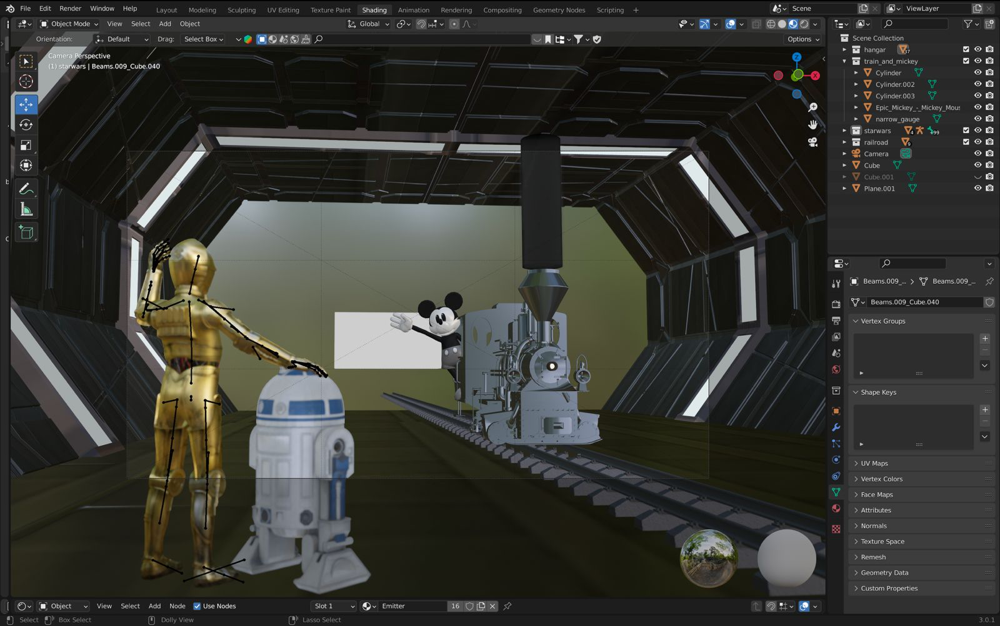
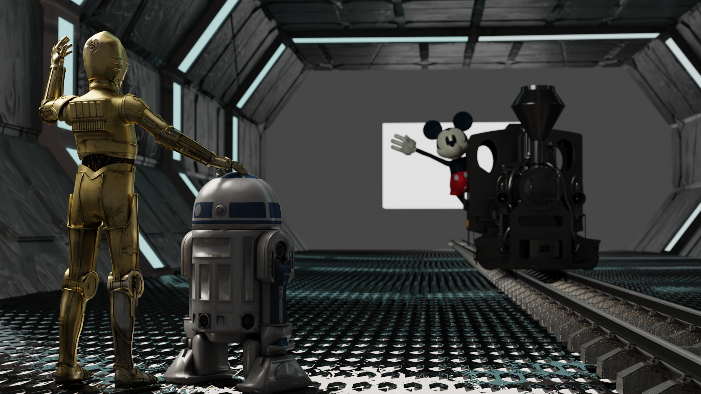
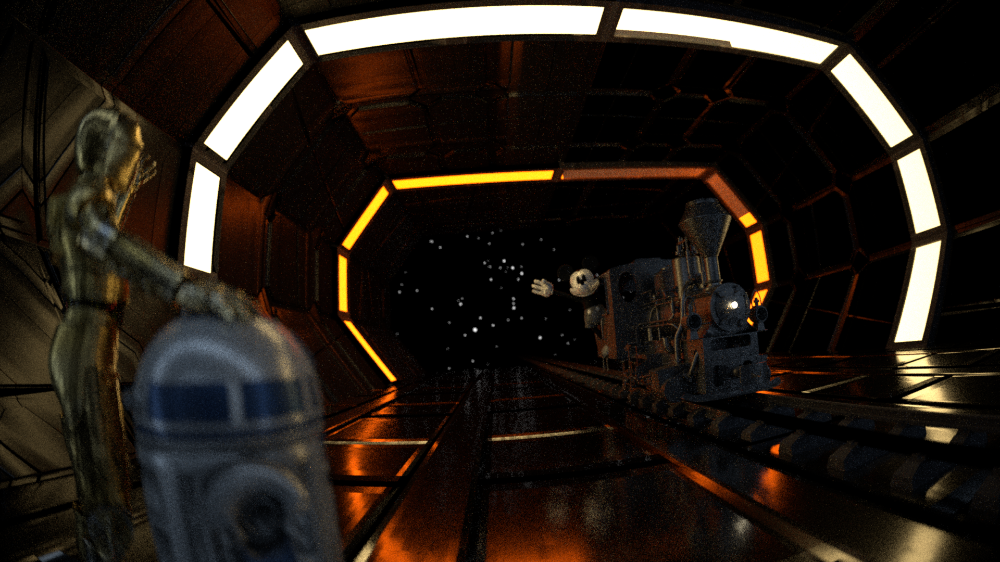
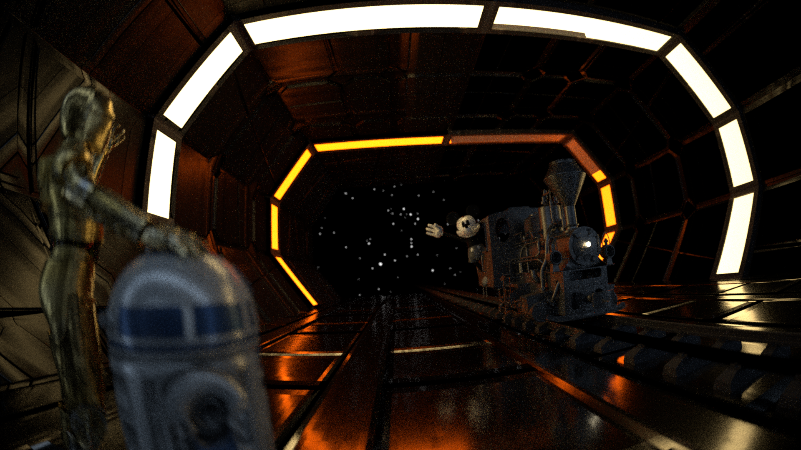
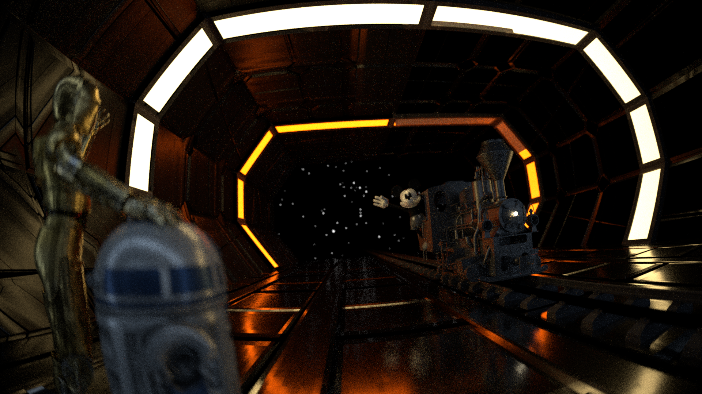

Original Motivational Image (created using ChatGPT)
Final Render
==============================================================
“The Train In-Between Time, Space and Disney Universes”
An original 1870s steam engine with a black and white Mickey Mouse arrives after a long journey across time and space to a space hangar in a galaxy far far away…
Modeling Process
==============================================================
We created a skeleton of our scene in blender to get objects relatively close to their desired positions with basic framing performed using a perspective camera in the Cycles renderer to preview. From this blender file, we used an existing [Blender to Nori exporter](https://github.com/Phil26AT/BlenderNoriPlugin/tree/master) to generate an xml scene definition. We replaced the default camera with our custom realistic camera and introduced volumes to the scene. Final object position, texturing, and lighting was performed within Nori itself as the effects introduced by our realistic camera were essential for the composition process.
The figures below show the modelling process in Blender and an early render using the built in Cycles engine.

Structuring our scene

An early draft render from Blender
Additional features, namely volumes and the environment map, were introduced in Nori. Aligning and tuning these features required some manual trial and error – the figure below gives a glimpse into aligning the star map. We placed the constellation of Orion the hunter as our centerpiece.

When the stars align
Observant readers may notice that the constellation is flipped from its normal, earthly presentation. Perhaps this is a bug we did not have the time to fix. Perhaps this is an intentional feature – Mickey has traveled to a galaxy so far far away that Orion can be scene from the opposite side. We let you be the judge.
For specific discussion of various features, see the technical overview pages for contributions made by Orion and Nicola.
Resources
==============================================================
The following assets are used in our final render:
Asset | License |
--------------|--------------|
[Textures/Normal Maps](https://freepbr.com/) | [License](https://freepbr.com/about-free-pbr/) |
[Railroad Tracks](https://www.cgtrader.com/free-3d-models/architectural/engineering/railroad-9fee9d75-7680-453b-bb49-bca06ea949b9) |[License](https://www.cgtrader.com/pages/terms-and-conditions#royalty-free-license) |
[Train](https://www.turbosquid.com/3d-models/narrow-gauge-steam-locomotive-782975) | [License](https://blog.turbosquid.com/turbosquid-3d-model-license/) |
[Mickey Mouse model](https://www.cgtrader.com/free-3d-models/character/other/riggd-mickey) |[License](https://www.cgtrader.com/pages/terms-and-conditions#royalty-free-license) |
[C3PO model](https://www.cgtrader.com/3d-models/character/sci-fi-character/low-poly-c-3po-model-rigged-and-textured?utm_source=Iterable&utm_medium=email&utm_campaign=v3_User_Order_Confirmation) |[License](https://blog.turbosquid.com/turbosquid-3d-model-license/##Editorial-Usage) |
[R2D2](https://www.turbosquid.com/3d-models/artoo-detoo-1023349) | [License](https://blog.turbosquid.com/turbosquid-3d-model-license/##Editorial-Usage) |
[Volumes](https://jangafx.com/) | [License](https://jangafx.com/software/embergen/download/free-vdb-animations) |
For our star map, this work has made use of data from the [European Space Agency (ESA) mission Gaia](https://www.cosmos.esa.int/gaia), processed by the Gaia Data Processing and Analysis Consortium ([DPAC](https://www.cosmos.esa.int/web/gaia/dpac/consortium)). Funding for the DPAC has been provided by national institutions, in particular the institutions participating in the Gaia Multilateral Agreement.

 
